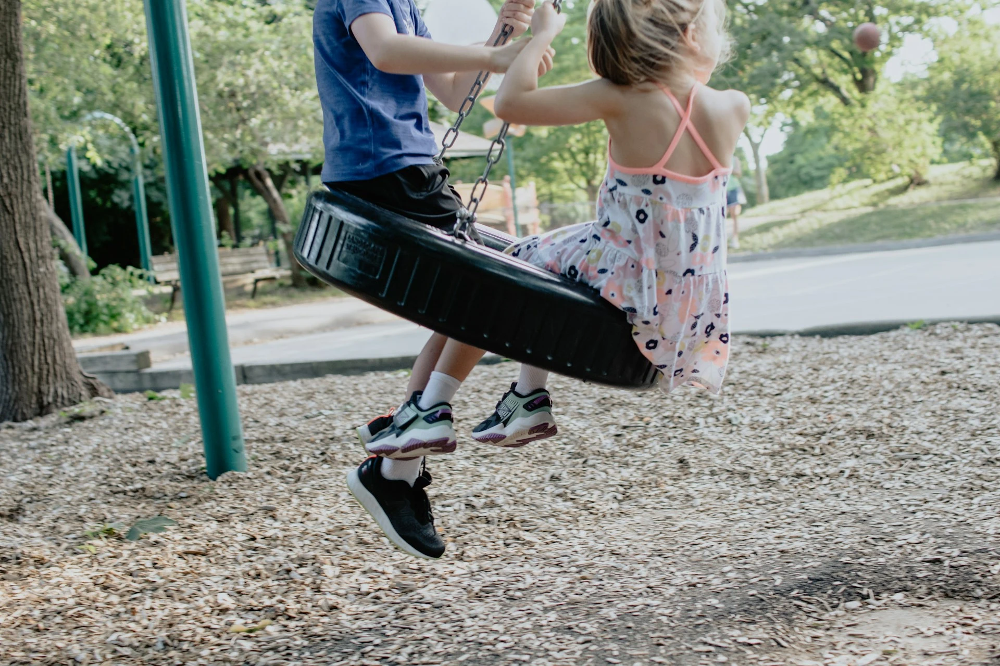

Ayer, en la calle, se me aproximó un tipo con pinta chunga. Merodeaba, mal vestido y se fijó en mí. Se me acercó y me preguntó por una calle. Olía a alcohol.
Pensé, la verdad, que pretendería hacerme daño, hurtarme algo al descuido o sacarme unas monedas. Sé que ese pensamiento puede ser injusto, pero soy muy desconfiado con los desconocidos. Así que iba a hacer lo que siempre: acelerar el paso, decirle lacónicamente que desconocía esa calle —era la verdad—, y seguir con mi vida, sorteando un posible problema.
Por alguna razón, hice todo lo contrario.
Me detuve y le escuché. Sacó del bolsillo un papel arrugado con una dirección manuscrita. Yo saqué mi teléfono y busqué el camino con el GPS. Estaba muy cerca y, además, era en la misma dirección en la que yo iba.
Le acompañé una parte del camino y le expliqué cómo llegar a su destino después. El tipo se despidió muy agradecido, con una sonrisa extraña y levantándome el pulgar, en esa jerga atávica y universal que quizá aprendimos cuando habitábamos las cuevas.
Yo me sentí genial.
Ahora estoy en una biblioteca. Un hombre que parecía confundido acaba de preguntarme cómo se llega al piso de arriba. Yo no lo tenía muy claro —nunca he subido—, pero ha resonado en mí el bienestar que sentí ayer, ayudando en la calle a aquel tipo chungo.
Le he acompañado por este laberinto hasta que hemos encontrado las escaleras, y no le he dejado hasta que ha quedado clara la ruta y resuelta su duda. Se ha desvivido en agradecimientos.
Como ayer, me siento genial, porque ser amable con el prójimo es un acto de humanidad, y brindar ayuda a quien la pide es un acto de amor que glorifica a las dos partes.
Ahora estoy en la biblioteca, con la mirada clavada en la pared, preguntándome por qué he sido siempre tan desconfiado con los desconocidos de la calle.
—En el norte somos así, más fríos —es lo primero que he pensado.
Pero luego me he dado cuenta del verdadero porqué.
Cuando yo era un niño, en los años 90, pasaba muchas horas jugando en la calle con otros niños.
Un desgraciado día, el país fue devastado por la terrible noticia del asesinato de Miriam, Toñi y Desirée, las niñas de Alcàsser. Las flamantes cadenas privadas de televisión se rebañaron con una saña nunca vista en el escabro.
Aquel mismo año, también secuestraron y asesinaron a Anabel Segura. Y a las niñas de Aguilar, que siguen desaparecidas. Siguieron los dramas de Sonia González, de «el violador del ascensor» en Valladolid, y de «el violador de Valdenoja», que era mi calle, mi barrio.
El periodismo más pútrido desplazaba unidades móviles y programas especiales, hendiendo sus brazos hasta lo más sórdido. El país enloqueció. Yo tenía diez años. Mi madre me prohibió bajar a la calle a jugar. El patio quedó casi vacío, y en casa y en el colegio me enseñaron a desconfiar siempre del extraño.
Ayer ayudé a un tipo chungo que estaba perdido. Hoy me pregunto cuántas veces he negado la mano a quien la necesitaba por nuestros inadvertidos traumas colectivos infantiles.
